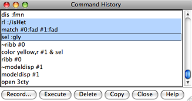

|  |
The Command History lists previously used commands. The commands can be re-executed and/or saved to a file. The Command History can be opened from the pulldown menu marked by a black triangle to the right of the Command Line. The menu also shows the most recently entered commands. Commands are shown as entered even if they failed to execute due to mistyping or incorrect syntax.
In the Command History, individual commands or blocks of commands may be chosen (highlighted) using the left mouse button. Ctrl-click adds to an existing choice rather than replacing it. To choose a block of commands without dragging, click on the first (or last) and then Shift-click on the last (or first) in the desired block. In the figure, three commands are chosen.
When the mouse focus is in the Command Line or graphics window, Ctrl-u erases the command line contents, and the history can be navigated with Ctrl-p (previous command) and Ctrl-n (next command). Additionally pressing Shift indicates navigating to the next/previous occurrence of the same command name (initial set of characters) instead of to whatever command is immediately adjacent in the history. Navigation skips commands for which the entire line is identical. When the mouse focus is in the Command Line (not the graphics window), another way to navigate the history is with the keyboard up arrow and down arrow, alone or in combination with Shift.
Record... brings up a dialog for saving or appending commands to a file. The chosen commands or all commands in the history can be saved, as Chimera commands or their Python translations.
Execute executes the chosen commands in the order shown; double-clicking an individual command executes that command. Delete removes the chosen commands from the history. Copy copies the chosen commands as plain text that can be pasted into another application window.
Close dismisses the Command History window; Help opens this manual page in a browser window.
Recently used commands are saved upon exiting from Chimera and will appear in the Command History of the next session that uses the same preferences file. How many commands to remember between sessions is specified in the Command Line preferences.
A file containing the Python translations of commands cannot be executed in
Chimera until statements to import any necessary modules have been added.
In some cases, adding
import Midas
to the beginning of the file will be sufficient;
however, additional modules may need to be imported,
depending on the particular commands included
and any further code that is added to the file.
A Python script can be executed by simply opening it in Chimera, or if it has command-line arguments, using the command runscript or the startup option --script.